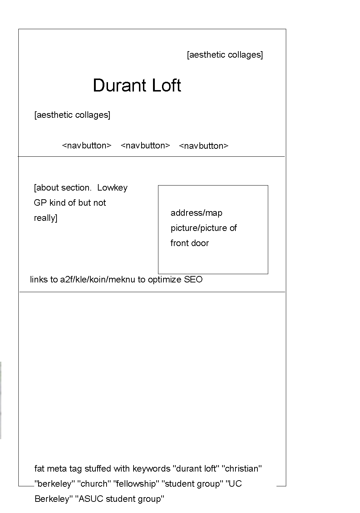

As a whole, we're probably going to replace all these pictures and redo the whole website. This is just a baseline framework.
James, you have an artsy eye. Could you work with Kaila/Marvy for the main page design? Doesn't have to be static like this. You can go ham if you want! I'll help with later implementations.
Code-wise, please add the three navbuttons. I'll handle the smooth scrolling, so just get the visual element down. :D
The third navbutton will go to a facebook page.
Feel free to use Fonts Awesome Favicons if you have the interest.
Jenny, Could you handle the second page? You can add fancier design if you'd like, but for now, let's get a description text box on the left, with an image box on the right. (As shown in the picture)
If you can, find a way to incorporate links to each Minstry group. (3 only. Koin isn't a thing anymore)
For you others: ideas?
